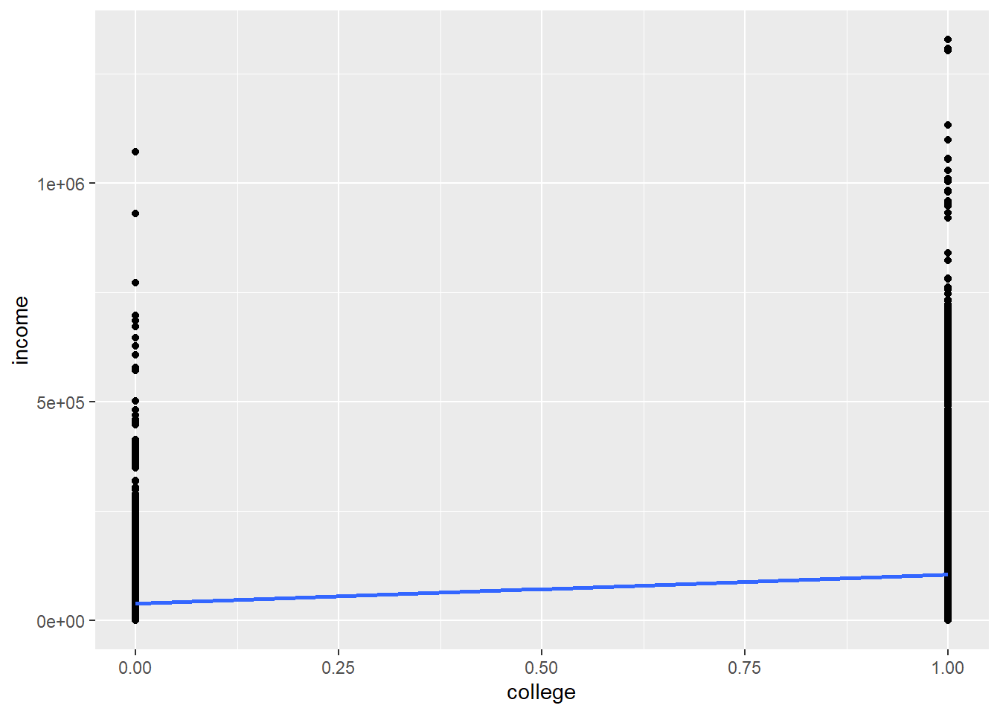
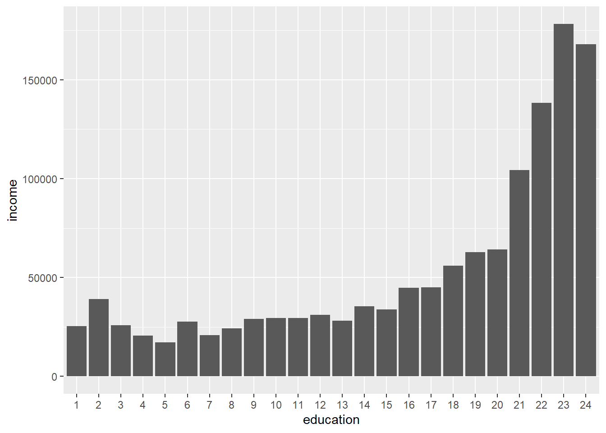

5.4 Survey regression
Besides autocorrelation, another problem with the regression we’ve been performing so far is ecological inference, where the aggregation of measures at the census tract level could be masking the underlying relationships at the individual level. For example, it’s possible that a positive relationship between education and income at the census tract level is masking an even stronger positive relationship at the individual level, or a less positive or even negative relationship. To explore such individual relationships, we can switch to running a previous linear regression (income vs. other factors) with PUMS data, as we first encountered in Chapter 3.1. The analysis has some structural differences because now we are working with individual-level data. The y values will be the exact income reported by our sample of PUMS individuals on the ACS questionnaire. As for the x value, we will no longer be working with a variable like “% with college or higher” for all households in a Census tract; instead, we will have a categorical “yes” or “no” for whether the individual has college or higher. The previous scatter plots had continuous variables for both the x and y axis, but generally, you can code binary categories as 0 or 1, which won’t make much sense when viewed as a scatter plot, but can still be interpreted via lm().
Similar to in Chapter 3.1, let’s use censusapi to load the PUMS data, picking specific variables for our purposes. Using the official codebook, we can grab a variety of variables we may find useful in our analysis:
SERIALNO,SPORDER,PWGTP, andWGTP, as we have seen before, are foundational variables that help us understand the relationship between individuals in a household, and apply potential weights to scale the survey sample to the population (though as we’ll see in this chapter, they aren’t what we need for regression analysis). I would generally recommend you always load these when doing PUMS analysis, just to have handy.AGEPto consider age, as appropriate.SCHLholds educational attainment; specifically, we can take coded values 18 or greater to represent college or higher.PINCPis personal income, in contrast toHINCPwhich we used before for household income.RAC1Pwill provide the race of each individual, which we’ll use in an upcoming example. Note that if you were separately interested in the race provided in ACS datasets for “households”, that is based on the race of the “head of household”, who would be the individual withSPORDER == 1within the household (i.e., uniqueSERIALNO).HISPprovides detailed Hispanic origin, andLANXlets us know whether a language other than English is spoken at home. We’ll use these for a later example.
library(censusapi)
library(tidyverse)
library(tigris)
library(sf)
library(leaflet)
Sys.setenv(CENSUS_KEY="c8aa67e4086b4b5ce3a8717f59faa9a28f611dab")pums_2019_1yr <- getCensus(
name = "acs/acs1/pums",
vintage = 2019,
region = "public use microdata area:*",
regionin = "state:06",
vars = c(
"SERIALNO",
"SPORDER",
"PWGTP",
"WGTP",
"AGEP",
"SCHL",
"PINCP",
"RAC1P",
"HISP",
"LANX"
)
)We’ll also be able to use the technique from Chapter 3.1 to filter down to just Bay Area PUMAs.
ca_pumas <-
pumas("CA", cb = T, progress_bar = F)
bay_county_names <-
c(
"Alameda",
"Contra Costa",
"Marin",
"Napa",
"San Francisco",
"San Mateo",
"Santa Clara",
"Solano",
"Sonoma"
)
bay_counties <-
counties("CA", cb = T, progress_bar = F) %>%
filter(NAME %in% bay_county_names)
bay_pumas <-
ca_pumas %>%
st_centroid() %>%
.[bay_counties, ] %>%
st_drop_geometry() %>%
left_join(ca_pumas %>% select(GEOID10)) %>%
st_as_sf()
bay_pums <-
pums_2019_1yr %>%
mutate(
PUMA = str_pad(public_use_microdata_area,5,"left","0")
) %>%
filter(PUMA %in% bay_pumas$PUMACE10)Now, we can clean and “recode” our variables. Recall that some variables we want to understand as numbers may currently be characters. We also can convert the multiple categories of SCHL into a binary “0” for less than college, and “1” for college or more. We’ll also filter to the population 25 and older, and restrict our analysis to positive incomes.
bay_pums_regression <- bay_pums %>%
mutate(
college = ifelse(
as.numeric(SCHL) >= 18,
1,
0
),
income = as.numeric(PINCP)
) %>%
filter(
as.numeric(AGEP) >= 25,
income > 0
)There are a variety of insights to gain by exploring what regression results for this dataset. Let’s first see what happens if we plot the binary variable college on the x-axis, and the continuous variable income on the y-axis:
bay_pums_regression %>%
ggplot(
aes(
x = college,
y = income
)
) +
geom_point() +
geom_smooth(method = "lm")
The points are too smashed together given the y-axis spread for us to see where the center of gravity (mean) of each vertical distribution of data is, but the blue line points out the two locations. You might recognize that the essence of this analysis is a comparison of the average income for those without college (college = 0) vs. those with college (college = 1), and the regression line simply connects the dots between these two averages to minimize the sum square of residuals. Let’s see what lm() gets us:
##
## Call:
## lm(formula = income ~ college, data = bay_pums_regression)
##
## Residuals:
## Min 1Q Median 3Q Max
## -105797 -61801 -24005 19286 1221199
##
## Coefficients:
## Estimate Std. Error t value Pr(>|t|)
## (Intercept) 39005 1016 38.40 <2e-16 ***
## college 66796 1148 58.21 <2e-16 ***
## ---
## Signif. codes: 0 '***' 0.001 '**' 0.01 '*' 0.05 '.' 0.1 ' ' 1
##
## Residual standard error: 107900 on 52080 degrees of freedom
## Multiple R-squared: 0.06108, Adjusted R-squared: 0.06106
## F-statistic: 3388 on 1 and 52080 DF, p-value: < 2.2e-16The regression coefficient is 66796, which is the slope of the blue line (rise of 66796, run of 1), or the difference in dollars between the two averages. We would have gotten the same result using group_by() and summarize() and plotting two bars on a bar chart.
The bar chart comparison is also instructive as we reconsider the college variable and, instead of converting it into a binary, keep all the original 24 attainment categories, from “No schooling completed” to “Doctorate degree”. We’ll treat the SCHL variable not as a numeric field but a factor, and make sure that the factor’s levels are numerically ordered (using sort()).
bay_pums_education <- bay_pums %>%
mutate(
education = SCHL %>%
factor(
levels = bay_pums$SCHL %>%
unique() %>%
as.numeric() %>%
sort()
),
income = as.numeric(PINCP)
) %>%
filter(
as.numeric(AGEP) >= 25,
income > 0
)Now let’s plot the average income of these 24 cohorts on a bar chart:
bay_pums_education %>%
group_by(education) %>%
summarize(
income = mean(income, na.rm = T)
) %>%
ggplot(
aes(
x = education,
y = income
)
) +
geom_bar(
stat = "identity"
)
As expected, the higher the educational attainment, the higher the income. And let’s compare this with lm():
##
## Call:
## lm(formula = income ~ education, data = bay_pums_education)
##
## Residuals:
## Min 1Q Median 3Q Max
## -178153 -49416 -18421 18248 1188579
##
## Coefficients:
## Estimate Std. Error t value Pr(>|t|)
## (Intercept) 25476.7 3156.6 8.071 7.12e-16 ***
## education2 13693.3 23249.5 0.589 0.5559
## education3 311.3 26784.3 0.012 0.9907
## education4 -4869.6 22699.6 -0.215 0.8301
## education5 -8232.6 15847.2 -0.519 0.6034
## education6 2111.3 10402.8 0.203 0.8392
## education7 -4631.5 11674.4 -0.397 0.6916
## education8 -1269.7 9994.6 -0.127 0.8989
## education9 3522.5 5961.0 0.591 0.5546
## education10 3949.8 10725.1 0.368 0.7127
## education11 4079.4 7060.9 0.578 0.5634
## education12 5534.1 6102.7 0.907 0.3645
## education13 2575.6 6664.6 0.386 0.6992
## education14 10003.8 6438.3 1.554 0.1202
## education15 8315.8 4578.2 1.816 0.0693 .
## education16 19297.6 3416.8 5.648 1.63e-08 ***
## education17 19621.3 4784.2 4.101 4.12e-05 ***
## education18 30456.7 3747.9 8.126 4.52e-16 ***
## education19 37275.5 3422.8 10.890 < 2e-16 ***
## education20 38718.4 3577.1 10.824 < 2e-16 ***
## education21 78911.1 3262.7 24.186 < 2e-16 ***
## education22 112944.2 3348.2 33.733 < 2e-16 ***
## education23 152726.3 3855.5 39.612 < 2e-16 ***
## education24 142612.5 3860.3 36.944 < 2e-16 ***
## ---
## Signif. codes: 0 '***' 0.001 '**' 0.01 '*' 0.05 '.' 0.1 ' ' 1
##
## Residual standard error: 103000 on 52058 degrees of freedom
## Multiple R-squared: 0.1442, Adjusted R-squared: 0.1438
## F-statistic: 381.4 on 23 and 52058 DF, p-value: < 2.2e-16Notice how the “y-intercept” is actually just the height of the first bar from the bar chart, and all the other “slopes” are equivalent to the relative difference in height of that bar (education2, education3, etc., as automatically named by lm()) to the first bar. So, you can think of categorical predictors in a regression model as operating similar to the comparison of averages in the bar chart with each other. This regression analysis would seem to be not much more useful than a bar chart, but notice that the standard errors and “p-value” reported point out that the difference between each category vs. the first category does not become “statistically significant” until education16, or a “Regular high school diploma”, in part because of the sample sizes in the survey, and in part because of the actual underlying results. This would not have been as apparent through just a bar chart. Also, lm() allows you to represent categorical predictors in this way, and combine one dimension like education with many others in a larger multiple regression, which we’ll do next by incorporating race.
For simplicity, we’ll now represent education in the original two categories, and race as four: White, Black, Asian, and Other.
bay_pums_multiple <- bay_pums %>%
mutate(
college = ifelse(
as.numeric(SCHL) >= 18,
"yes",
"no"
),
race = case_when(
RAC1P == "1" ~ "white",
RAC1P == "2" ~ "black",
RAC1P == "6" ~ "asian",
TRUE ~ "other"
),
income = as.numeric(PINCP)
) %>%
filter(
as.numeric(AGEP) >= 25,
income > 0
)
model <- lm(income ~ college + race, bay_pums_multiple)
summary(model)##
## Call:
## lm(formula = income ~ college + race, data = bay_pums_multiple)
##
## Residuals:
## Min 1Q Median 3Q Max
## -111129 -61133 -23208 20469 1215867
##
## Coefficients:
## Estimate Std. Error t value Pr(>|t|)
## (Intercept) 41506 1284 32.323 < 2e-16 ***
## collegeyes 63025 1164 54.158 < 2e-16 ***
## raceblack -32292 2370 -13.624 < 2e-16 ***
## raceother -17283 1730 -9.992 < 2e-16 ***
## racewhite 6602 1079 6.117 9.61e-10 ***
## ---
## Signif. codes: 0 '***' 0.001 '**' 0.01 '*' 0.05 '.' 0.1 ' ' 1
##
## Residual standard error: 107400 on 52077 degrees of freedom
## Multiple R-squared: 0.0692, Adjusted R-squared: 0.06913
## F-statistic: 967.9 on 4 and 52077 DF, p-value: < 2.2e-16First, notice that we are given the rows collegeyes, raceblack, raceother, and racewhite. Treating these categories alphabetically, it has taken collegeno and raceasian to be the “baselines” by which the other categories are compared. Next, notice that the regression coefficient for collegeyes has changed from the earlier 66796 to 63025, which, similar to our previous experience, reflects our “controlling” for the explanatory power of race. Next, notice that the regression coefficients for the three listed race categories can be interpreted as differences in average income relative to Asian individuals, while controlling for college attainment. Finally, notice that while each of these associations appears statistically significant, overall, these variables only explain about 7% of the variation in individual income. In other words, individual incomes vary a lot, and while education and race have something to do with it, they wouldn’t help you much in making a precise prediction.
Let’s now briefly consider a different kind of y-axis variable. So far, while we’ve explored binary options in our independent variables of regression, such as White vs. non-White for individuals, we have not considered how to construct a regression analysis if the outcome (dependent) variable is a binary outcome, like an individual going to college or not. In this case, we can frame that binary outcome as a percent likelihood (between 0 and 1) of the outcome happening; that essentially turns our binary outcome back into a continuous variable. However, we cannot use simple linear regression as we used in the previous chapter, because the nature of the outcomes here is quite different. Instead of the relationship between x and y being best represented by a straight line (with the residuals being normally distributed), our possible outcomes here are often represented by an S-shaped curve that is constrained to 0 and 1 as minimum and maximum likelihoods, with some direction of x (or multiple x values) leading to an increasingly likely outcome, and vice versa (you could design your own Galton Board -style experiment to convince yourself that this curve is a good approximation of real-world phenomena). This curve seems to be a completely different model of x and y relationships from what we’ve dealt with before, but manipulating the y axis into a “logit” (log odds, as explained in the link above) turns the S-curve back into a linear relationship between x and y, which we can use our previous regression method to evaluate. Again, all of this still depends on the assumption that such a logit model is an appropriate representation for our observed data, which involves a similar type of pre-analysis inspection and experience as simple linear regression requires. But a logit (or logistic) regression is a powerful and generalizable technique for using linear combinations of one or more independent variables to (non-causally) predict a categorical outcome. The simplest version, which we’ll cover in this section, involves a binary outcome that can be coded as having 0 to 1 likelihood of occurring, but logistic regression can be expanded to predict from a set of multiple outcomes.
For our example, let’s use PUMS data, specifically information about age, race, and ethnicity, to predict primary language spoken (English or other). We’ll use AGEP, age, as a continuous variable (and filter to individuals 5 or older), but for race and ethnicity, we’ll code white and hispanic as binary “yes” or “no” variables. We’ll do the same for the dependent variable whose probability we’d like to predict, english (1 being “speaks only English”), though you should consider this 0 to 1 numeric coding to be used quite distinctly in the logistic regression as it will be treated as “odds” and converted to a log value.
bay_pums_language <-
bay_pums %>%
mutate(
AGEP = as.numeric(AGEP),
white = ifelse(
RAC1P == "1",
"yes",
"no"
),
hispanic = ifelse(
HISP == "1",
"no",
"yes"
),
english = ifelse(
LANX == "1",
0,
1
)
) %>%
filter(AGEP >= 5)Now, instead of lm(), we will use a more generalized function called glm() which can be used to do the simple linear regression from the last chapter, but can also receive different arguments under family= which change the “type” of regression to be performed (i.e. what kind of error distribution to expect in the data). Here, we’ll indicate family = quasibinomial() to let the function know that the function should be interpreted like a logit function.
logit_model <- glm(
english ~ AGEP + white + hispanic,
family = binomial(),
data = bay_pums_language
)
summary(logit_model)##
## Call:
## glm(formula = english ~ AGEP + white + hispanic, family = binomial(),
## data = bay_pums_language)
##
## Deviance Residuals:
## Min 1Q Median 3Q Max
## -2.1094 -1.0469 0.5351 0.6358 2.2017
##
## Coefficients:
## Estimate Std. Error z value Pr(>|z|)
## (Intercept) 0.1373157 0.0206438 6.652 2.9e-11 ***
## AGEP -0.0085323 0.0004108 -20.769 < 2e-16 ***
## whiteyes 2.0157503 0.0183222 110.017 < 2e-16 ***
## hispanicyes -1.6662209 0.0235453 -70.767 < 2e-16 ***
## ---
## Signif. codes: 0 '***' 0.001 '**' 0.01 '*' 0.05 '.' 0.1 ' ' 1
##
## (Dispersion parameter for binomial family taken to be 1)
##
## Null deviance: 98736 on 73571 degrees of freedom
## Residual deviance: 79943 on 73568 degrees of freedom
## AIC: 79951
##
## Number of Fisher Scoring iterations: 4Note that because of family = quasibinomial(), glm() interprets the dependent and independent variables in the appropriate way for logistic regression. If you wanted to use glm() for simple linear regression (“ordinary least squares”), you could specify family = gaussian(). The interpretation of the glm() is not immediately intuitive because the y value is the “log odds” of speaking English. If we take the exp() of all regression coefficients, the y value becomes “odds”.
## (Intercept) AGEP whiteyes hispanicyes
## 1.1471903 0.9915040 7.5063570 0.1889598Odds divided by 1 + odds yields probability of occurring, as most are more likely to intuitively understand.
## (Intercept) AGEP whiteyes hispanicyes
## 0.5342751 0.4978669 0.8824409 0.1589287At face value, the negative and positive signs in the glm() original coefficients, and the final probabilities being less than or greater than 50/50 indicate:
- As age increases, holding other variables constant, probability of speaking English slightly decreases
- If the individual is white, holding other variables constant, probability of speaking English increases
- If the individual is Hispanic, holding other variables constant, probability of speaking English decreases
The exact probabilities can be computed, or predicted, for specific combinations of independent variables using predict() with the extra argument type = “response” to convert the result into probability of occurrence:
## 1
## 0.8595762Now, one last important correction to all the results we’ve produced so far. We’ve been using the PUMS respondents as the sample, but as you recall from Chapter 3.1, each respondent can have a different weight (PWGTP) if we want to extrapolate from survey respondents to the full population. Whatever relationships we’ve seen so far may not hold true once we are trying to represent the full population in an area. So how can we make use of the information in PWGTP? There appears to be a weights parameter in lm(), but this has the effect of changing the “weight” of each record without changing the sample size, which means that our standard errors, which are critical for interpreting the statistical significance of our results, are circumspect. Ultimately, we can only do so much with the results of a complex sampling technique as used by the Census Bureau, but they do provide a solution in the form of “replicate weights”. These are a statistical construct of their own that let you essentially run a Monte Carlo-like 80 simulations of the full population, using 80 replicate versions of PWGTP and WGTP (depending on whether you’re doing person-level or household-level analysis). You would still use the primary PWGTP/WGTP weights to get mean estimates, but to compute the standard error of a mean estimate, you can produce the 80 replicate results (using PWGTP1, PWGTP2, etc.), and the standard error of the sample of 80 is the standard error you seek.
This is tedious but doable in R, to obtain correct regression coefficients and standard errors for the various results we’ve gotten so far. Fortunately, the survey package includes the functions svylm() and svyglm() which can specifically handle PUMS replicate weights for us. You just need to first create a particular kind of input object using svrepdesign(), where you can specify replicate weights. Let’s first grab the 80 replicate weights using getCensus(); paste0("PWGTP",1:80) below is a shorthand for “PWGTP1”, “PWGTP2”, etc.
library(survey)
pums_2019_1yr_wts <- getCensus(
name = "acs/acs1/pums",
vintage = 2019,
region = "public use microdata area:*",
regionin = "state:06",
vars = c(
paste0("PWGTP",1:80)
)
) %>%
mutate(
PUMA = str_pad(public_use_microdata_area,5,"left","0")
) %>%
filter(PUMA %in% bay_pumas$PUMACE10)
bay_pums_language_wts <- pums_2019_1yr_wts %>%
mutate(AGEP = bay_pums$AGEP) %>%
filter(as.numeric(AGEP) >= 5) %>%
select(starts_with("PWGTP"))Note that the last step above allows us to match the number of records we had in bay_pums_language.
logit_survey_design <- svrepdesign(
data = bay_pums_language,
type = "ACS",
repweights = bay_pums_language_wts,
weights = as.numeric(bay_pums_language$PWGTP)
)logit_survey_model <- svyglm(
formula = english ~ AGEP + white + hispanic,
family = quasibinomial(),
design = logit_survey_design
)##
## Call:
## svyglm(formula = english ~ AGEP + white + hispanic, family = quasibinomial(),
## design = logit_survey_design)
##
## Survey design:
## svrepdesign.default(data = bay_pums_language, type = "ACS", repweights = bay_pums_language_wts,
## weights = as.numeric(bay_pums_language$PWGTP))
##
## Coefficients:
## Estimate Std. Error t value Pr(>|t|)
## (Intercept) 0.2601504 0.0297174 8.754 3.95e-13 ***
## AGEP -0.0095736 0.0004939 -19.383 < 2e-16 ***
## whiteyes 1.8600114 0.0287303 64.741 < 2e-16 ***
## hispanicyes -1.8117239 0.0485835 -37.291 < 2e-16 ***
## ---
## Signif. codes: 0 '***' 0.001 '**' 0.01 '*' 0.05 '.' 0.1 ' ' 1
##
## (Dispersion parameter for quasibinomial family taken to be 75063.79)
##
## Number of Fisher Scoring iterations: 3## (Intercept) AGEP whiteyes hispanicyes
## 1.2971252 0.9904720 6.4238097 0.1633723predict.glm(logit_survey_model, data.frame(AGEP = 40, white = "yes", hispanic = "no"), type = "response")## 1
## 0.8503331In this case, all the results are nearly the same, but using this technique ensures that you are accurately accounting for the design of ACS.